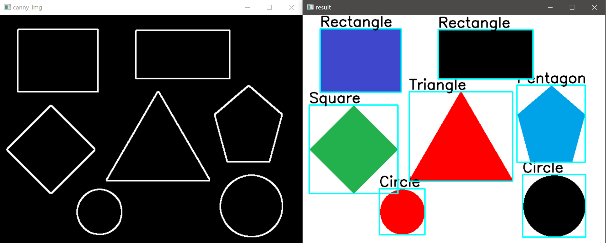

基于Opencv的形状识别
基于Opencv的形状识别
前言：
一个简单的形状识别。
实验环境
Window 10、Visual Studio 2022、 opencv4.6
涉及到的一些知识
findContours寻找轮廓函数
1 | CV_EXPORTS_W void findContours( InputArray image, OutputArrayOfArrays contours, |
- image，单通道图像矩阵，可以是灰度图，但更常用的是二值图像，一般是经过Canny、拉普拉斯等边缘检测算子处理过的二值图像；
- contours，定义为“vector<vector
> contours”，是一个向量，并且是一个双重向量，向量内每个元素保存了一组由连续的Point点构成的点的集合的向量，每一组Point点集就是一个轮廓。 有多少轮廓，向量contours就有多少元素。 - hierarchy，定义为“vector
hierarchy”，先来看一下Vec4i的定义： typedef Vec<int, 4> Vec4i; Vec4i 是 Vec<int,4> 的别名，定义了一个“向量内每一个元素包含了4个int型变量”的向量。所以从定义上看，hierarchy也是一个向量，向量内每个元素保存了一个包含4个int整型的数组。向量hiararchy 内的元素和轮廓向量contours 内的元素是一一对应的，向量的容量相同。hierarchy向量内每一个元素的 4 个 int 型变量，分别表示第 i个轮廓的后一个轮廓、前一个轮廓、父轮廓、内嵌轮廓的索引编号。如果当前轮廓没有对应的后一个轮廓、前一个轮廓、父轮廓或内嵌轮廓的话，则相应位被设置为默认值-1。 - mode，定义轮廓的检索模式：
- method，定义轮廓的近似方法：
- Point偏移量，所有的轮廓信息相对于原始图像对应点的偏移量，相当于在每一个检测出的轮廓点上加上该偏移量，并且Point还可以是负值！
mode 定义轮廓的检索模式：
- CV_RETR_EXTERNAL：只检测最外围轮廓，包含在外围轮廓内的内围轮廓被忽略
- CV_RETR_LIST：检测所有的轮廓，包括内围、外围轮廓，但是检测到的轮廓不建立等级关系，彼此之间独立，没有等级关系，这就意味着这个检索模式下不存在父轮廓或内嵌轮廓， 所以hierarchy向量内所有元素的第3、第4个分量都会被置为-1
- CV_RETR_CCOMP：检测所有的轮廓，但所有轮廓只建立两个等级关系，外围为顶层，若外围内的内围轮廓还包含了其他的轮廓信息，则内围内的所有轮廓均归属于顶层
- CV_RETR_TREE：检测所有轮廓，所有轮廓建立一个等级树结构。外层轮廓包含内层轮廓，内层轮廓还可以继续包含内嵌轮廓
method，定义轮廓的近似方法
- CHAIN_APPROX_NONE：保存物体边界上所有连续的轮廓点到contours向量内
- CHAIN_APPROX_SIMPLE 仅保存轮廓的拐点信息，把所有轮廓拐点处的点保存入contours向量内，拐点与拐点之间直线段上的信息点不予保留
- CV_CHAIN_APPROX_TC89_L1，CV_CHAIN_APPROX_TC89_KCOS使用teh-Chinl chain 近似算法
该内容这位博主讲得很细，我这里只是做个简单的参数介绍。
approxPolyDP多边形拟合函数
1 | CV_EXPORTS_W void approxPolyDP( InputArray curve, OutputArray approxCurve, |
- InputArray curve：输入的点集。
- OutputArray approxCurve：输出的点集，当前点集是能最小包容指定点集的。画出来即是一个多边形。curve 和 approxCurve 应该属于同一类型。
- double epsilon：指定的精度，也即是原始曲线与近似曲线之间的最大距离。（精度一般为周长的零点几倍即可）
- bool closed：若为true，则说明近似曲线是闭合的；反之则为断开。
实验步骤
- 预处理图像
- 灰度化处理
- 边缘检测
- 寻找轮廓
- 多边形拟合提取边数
- 根据边数确定形状
代码
1 |
|
实验图

要点
- 多边形拟合精度的选取
- 轮廓的检索模式，本文采取了RETR_EXTERNAL只检测最外围轮廓。
参考资料
本博客所有文章除特别声明外，均采用 CC BY-NC-SA 4.0 许可协议。转载请注明来自 Obito Blog！
相关推荐


评论